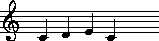
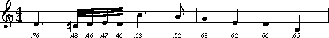

|
|
In addition, we will discuss the accent command -- a tool which estimates how salient or noticeable a given note is. The accent command can be used to pre-process musical passages so only those notes of greatest importance are considered when measuring musical similarity.
One way of measuring similarity is to compare the rise and
fall of two sets of numbers.
Suppose, for example, that we wanted to determine whether
high pitches have a general tendency to be longer in duration than low pitches.
For each note we would establish two numerical values:
one characterizing the pitch height and one characterizing
the duration (say in seconds).
Our data might look as follows:
This data does seem to exhibit an association between higher pitches and longer notes. The longest notes are fairly high (12 and 16 semits), whereas most of the shortest notes (4 and 5 semits) are lower. There are some exceptions, however, such as the 0.5 sec. duration for a pitch of 14 semits.
**semits**dur 7 1.00 16 1.50 14 0.50 12 2.00 7 1.00 4 0.50 5 0.50 7 1.00 *- *-
The Humdrum correl command allows us to characterize more precisely the degree of similarity between two sets of numbers. The correl command expects precisely two input spines; it is easily invoked:
correl inputfile
For the above semitone/duration data, correl will output the value +0.515.
Technically, the
correl
command calculates Pearson's coefficient of correlation between
two spines containing numerical data.
Correlation coefficients range between +1 and -1.
A value of +1 indicates that both sets of numbers rise and fall
in precise synchrony -- although the magnitude of the numbers
may differ.
For example, the following input exhibits a correlation of +1.0
-- even though the two sets of numbers differ in overall magnitude.
If we multiply these numbers by a constant, or if we substract or add a constant value to each number in one of the spines, they would still exhibit a correlation of +1.0. In summary, correlations are insensitive to the absolute magnitude and offsets for different sets of numbers.
**foo**bar 1 100 3 300 2 200 1 100 *- *-
A correlation coefficient of -1 means that the rise and fall of numerical values are exactly reversed. When one set of numbers is rising, the other set is falling -- and vice versa. By contrast, a correlation coefficient of zero means that the two sets of numbers are statistically independent of each other. For example, comparing two large sets of random numbers will result in a correlation coefficient near zero.
The
correl
command attends only to numerical input data.
Non-numerical data is simply ignored.
If a data token contains a mix of numeric and non-numeric characters,
then only the first complete numerical subtoken is considered.
The following examples illustrate how
correl
interprets mixed data tokens:
Table 25.1
token interpretation 4gg#4 4.gg# 4 -32aa -32 -aa33 33 x7.2yz 7.2 a7..2bc 7 [+5]12 5 $17@2 17 =28b 28 a1b2 c.3.d 1 0.3
Notice in the last example that multiple-stops are treated as potentially independent numbers. For example, if the data token encodes a double-stop, then correl will determine whether both subtokens can be interpreted numerically.
In normal operation, the correl command expects numerical data to be precisely matched in both input spines. That is, if a particular data record contains no numbers in the left spine, it should also contain no numbers in the right spine. Similarly, if the left spine contains three numbers (in a triple stop) then the right spine must also contain three numbers in the same record. If there is any breach of the criterion of number pairing, correl will issue an error message and stop.
Suppose we had a passage of two-part, first species counterpoint and we were interested in whether the two voices tend toward contrary and oblique motion rather than parallel and similar motion. In first species counterpoint, each pitch in the upper voice is matched with a pitch in the lower voice. We could measure the pitch-related correlation between the two parts as follows:
semits species1.krn | correl -s ^=
The output will consist of a single numerical value. If the value is positive, then it indicates that the parts tend to move up and down together in pitch. That is, a positive correlation indicates a preponderance of parallel and similar contrapuntal motion. Conversely, a negative correlation would indicate a preponderance of contrary and oblique motion.
Notice the use of the
-s
option in the above command.
Since common system barlines often contain measure numbers
(e.g. =28), they are interpretable as numeric data.
For most inputs, the user will not want to have measure numbers
participate in the similarity calculation.
The
-s
option allows the user to specify a regular expression indicating
data records to skip.
Now suppose that we wanted to measure a similar pitch-related correlation for a passage of second species counterpoint. In second species counterpoint, there are two pitches in the upper voice for each pitch in the lower voice. Translating our pitch data to semitones will result in a failure of the matched-pairs criterion. There are two ways of overcoming this problem. One method is to use ditto to repeat the sustained semitone value for the slower-moving part:
semits species2.krn | ditto -s ^= | correl -s ^=
Another approach would be to omit from consideration those notes that are not concurrent with a note in the other voice. The -m option for correl disables the matched-pairs criterion. That is, if numerical data is missing from either one of the input spines, correl will simply discard the entire data record from the correlation calculation. Using this approach, we would omit the ditto command:
semits species2.krn | correl -m -s ^=
Note that in formal statistical tests, the -m option should never be used.
In the above examples, correl generates a single output value indicating the degree of numerical similarity between two spines. A more valuable use of correl involves scanning a spine for portions that are similar to a brief excerpt or template. In this mode of operation, the input consists of a single input spine plus a separate template that represents a pattern being sought.
The -f option for correl allows the user to specify a file that acts as a template which is then scanned across some input. By way of example, suppose we are looking for motivic instances similar to the first four notes of Frère Jacques. Our template file might look as follows:
We would like to scan an entire work looking for possible matches or similar passages. The following example shows a sample input and corresponding output -- given the above template. The left-most spine is the original input represented using the French
**semits0 2 4 0 *-
**solfg
scheme.
The middle spine is the input (translated to
**semits)
supplied to the
correl
command.
The right-most spine was generated using the following command:
The similarity values generated by correl are output as a
**solfg**semits **correl =1 =1 =1 do 0 1.000 re 2 -0.500 mi 4 -0.866 do 0 0.866 =2 =2 =2 do 0 1.000 re 2 -0.500 mi 4 0.000 do 0 0.945 =3 =3 =3 mi 4 0.982 fa 5 -0.327 so 7 -0.655 =4 =4 =4 mi 4 0.982 fa 5 . so 7 . *- *- *-
**correl
spine.
Each successive value in the output spine is matched with a data token
in the target input file (**semits).
For example, the initial output value (1.000) indicates that an exact
positive correlation occurs between the template and the input.
Another exact positive correlation occurs at the beginning of measure 2.
More interesting, perhaps, are the high correlations (+0.982)
at the beginning of measures 3 and 4.
Although the semitone patterns differ (do, re, mi = +2 +2 semits;
mi, fa, so = +1 +2 semits),
the correlations remain high because of the approximate numerical
similarity.
This property gives
correl
a certain flexibility when searching for melodic similarity.
For more sophisticated melodic similarity searches,
both pitch and rhythm might be considered.
Two different correlations can be calculated -- one for
semitone contour similarity and one for durational similarity.
We can generate two **correl spines as follows.
First generate **semits and **dur data
so our inputs to
correl
are numerical.
semits inputfile > temp.sem
dur inputfile > temp.dur
Generate independent **correl spines for the
semitone pitch and duration data, and assemble the
two spines together:
correl -s ^= -f template.sem temp.sem > correl.sem
correl -s ^= -f template.dur temp.dur > correl.dur
assemble correl.sem correl.dur
The resulting output consists of two **correl spines:
one tracing the moment-by-moment pitch similarity,
and the other tracing the moment-by-moment duration similarity.
The output might appear as follows:
There are various ways of combining the pitch and duration data to create a composite similarity measure. For example, one might sum together the correlations on each line: passages that exhibit high pitch/duration similarity will tend to have a large positive summed score. Alternatively, one might set a threshold for both each of the pitch and duration correlation coefficients and use recode to mark promising points of high correlation. Values between +0.8 and +1.0 might be recoded as "similar"; values between +0.5 and +0.8 might be recoded as "maybe"; all other values might be recoded as null tokens. Assembling the recoded
**correl**correl 0.438 0.284 -0.118 0.226 0.487 -0.008 0.606 0.377 0.733 0.648 0.514 0.400 0.555 0.013 0.320 -0.158 -0.145 -0.160
**correl
spines, one could use
grep
to search for moments in the score that are suitable marked
as "similar" for both pitch and duration.
Finally, a word of caution is in order regarding the use of the correl command. Correlation coefficients indicate only the magnitude of the association between two sets of data. High correlation values can occur purely by chance. In particular, the noteworthiness (statistical significance) of a correlation value depends on the number of input values given in the template. Longer templates reduce the likelihood of spurious positive correlations. However, longer templates can also reduce the likelihood of discovering points of true similarity.
The problem of measuring similarity entails two questions: the criterion of similarity and the metric of similarity.
First, what is the criterion of similarity? A bassoon is similar to a cor anglais in tone color, however a bassoon is more similar to a 'cello in pitch range. Moreover, the word "bassoon" is more similar in spelling to "baboon" than either "'cello" or "cor anglais." The second question is how do we characterize the "distance" between objects? How much is the difference in pitch range between a 'cello and a bassoon? How much is the difference in spelling between "bassoon" and "baboon"?
In the correl command, the criterion of similarity arises from the user's choice of input representations. If the input represents duration, then the results pertain to durational similarity. If the input represents frequency, then the results pertain to frequency similarity. The metric used by correl is a linear numerical correlation. Since correl can deal only with numerical data, it is referred to as "parametric" method for measuring similarity. However, we know that non-numerical data can also be similar. An "apple" is more similar to an "orange" than it is to a "bassoon."
The simil command is a "non-parametric" tool for characterizing similarity. Like correl, the criterion of similarity depends on the user's choice of input representations. If the input represents metric position, then the results pertain to metric-position similarity. If the input represents phonetic text, then the results pertain to phonetic similarity, etc.
The metric used by simil is a so-called "edit distance" metric. The degree of similarity is characterized by how much modification would be required to transform one representation to another. By way of example, consider the spelling of the words "bassoon" and "baboon." Suppose we are allowed the following operations: (1) insertion of a character, (2) deletion of a character, and (3) substitution of a character. We can transform "bassoon" to "baboon" by deleting a letter `s' and substituting the letter `b' for the remaining letter `s'. If each edit operation was assigned a "penalty" value of 1.0, then we would say that the edit-distance between "bassoon" and "baboon" is 2.0.
Before we describe simil in detail, let's examine some sample inputs and outputs. Two inputs are required by simil -- the source and template inputs. Both inputs must contain single columns of data; multi-column inputs are forbidden. The source input must conform to the Humdrum syntax, however the template should contain only data records.
Depending on the mode of operation, simil outputs either one or two spines of continuous information regarding the similarity of the two inputs. The length of simil's output matches that of the source file.
The following example illustrates the operation of
simil.
Like correl,
simil
provides a template mode where a relatively short template is
scanned over a source input.
In the following example, the source input is given in the left-most
spine (labelled **foo) and is held in a file named source;
the middle column consists of the letters A, B and C, and is held in
a file named template.
The following command:
simil source template
generates the third column (labelled
**simil):
Each succesive value in the output spine is matched with a data token in the source input file. For example, the second value (1.00) in the
(source (template (simil input input) output) **fooA **simil X B 0.51 A C 1.00 B 0.51 C 0.37 D 0.51 A 0.72 B 0.72 B 0.51 C 0.51 B . A . *- *-
**simil spine arises
from an exact match of the (A,B,C) pattern beginning
with the second data token in the source input.
The second highest value (0.72) occurs in both the sixth and seventh
**simil data records, indicating that fairly similar
sequences occur beginning with the sixth and seventh data records
in the source input.
Specifically,
simil
has recognized that the sequence (A,B,B,C) is only one edit-operation
(a deletion) different from the template (A,B,C).
In the ensuing record,
simil
has recognized that the sequence (B,B,C) is also only one edit-operation
(substitute A for B) different from (A,B,C).
Notice that the final value (0.51) indicates that the edit distance
for (C,B,A) is less like the template.
Also notice that the lowest value (0.37) corresponds to an input
pattern (beginning D,D,A) that bears little resemblance to the template.
A musically more pertinent example is given below.
Here our template consists of a harmonic pattern:
I-IV-V-I.
It is important to understand that simil operates by comparing entire data tokens, so the token
(source (template (simil input input) output) **harmI **simil I IV 0.87 vi V 0.87 ii7 I 0.51 V 0.38 V7 0.41 I 0.82 r 0.41 V/V 0.38 V . iii . iiib . *- *-
V7 differs as much from V as the token vi.
It is the user's responsibility to choose an input representation
that facilitates recognition of interchangeable or equivalent data.
For example, in the follow example, the harmonic data given above has been
reclassified (using humsed) so that the number of distinct
harmonic categories has been reduced.
For example, the ii7 chord has been classified as a form of
subdominant function.
Notice how the
**simil
values better reflect the presumed harmonic similarity:
(source (template (simil input input) output) **Harmtonic **simil tonic subdom 0.92 subdom dom 0.90 subdom tonic 0.87 dom 0.44 dom 0.41 tonic 0.83 r 0.66 secondary 0.41 dom . mediant . mediant . *- *-
Technically, the simil command implements a Damerau-Levenshtein metric for edit distance (see Orpen & Huron, 1992). Permissible edit operations include substitutions and deletions. Each edit action incurs a penalty, and the cumulative edit-distance determines the similarity.
In the default operation,
simil
assigns equivalent edit penalties (1.0) for deletions and
substitutions.
However, the user can explicitly define these penalties via an
initialization file.
The initialization file must be named simil.rc and be
located in the current directory or the user's home directory.
Arbitrary costs may be assigned to any of eight edit operations
shown in Table 25.2.
Table 25.2
Name Tag Edit Operation D1 Delete a non-repeated token in String 1 D2 Delete a non-repeated token in String 2 R1 Delete a repeated token in String 1 R2 Delete a repeated token in String 2 S0 Substitute a token that is repeated in neither String 1 nor String 2 S1 Substitute a token that is repeated in String 1 only S2 Substitute a token that is repeated in String 2 only S3 Substitute a token that is repeated in String 1 and String 2
In describing the edit operations, String 1 is the source string and String 2 is the template string. Notice that there is no overt edit operation for insertion: an insertion in String 1 is equivalent to a deletion in String 2. However, different edit penalties may be defined for deletions from String 1 (D1) compared with deletions from String 2 (D2). In musical applications defining such asymmetrical penalties may be important. For example, two inputs may represent a basic melody and an embellished variant of the melody. Using asymmetrical penalties allows the user to specify that the deletion of tones from the embellished version is less costly than deletion of tones from the basic melody.
Since repetition is a common form of musical variation, simil allows the user to distinguish between repeated and non-repeated tokens. A repeated token is defined as one that is immediately preceded by an identical token. Thus, in deleting a sequence of identical symbols in String 1, say, all deletions except the first occurrence are R1 operations, whereas the deletion of the first occurrence is a D1 operation.
Note that the minimum theoretical edit-distance for any set of penalty weightings can be determined empirically by providing simil with source and template strings that share no symbols in common. For example, the source input may consist entirely of numbers, whereas the template input consists entirely of alphabetic characters. In the case where all edit operations are assigned a penalty of +1.0, the minimum quantitative similarity between two strings is 0.37.
Some user-defined weightings may give rise to peculiar results -- such as negative costs -- but simil does not forbid this. Simil generates warning messages if the weightings seem illogical; for example, if the cost of R1 is more than that of D1. In addition, simil will abort operation if the defined edit penalties transgress the triangular inequality rule (see Orpen & Huron, 1992). The default weighting for all operations is +1.0.
Below is a sample initialization file that defines the R1 substitution as having an edit penalty of 0.7, whereas the R2 substitution is given a penalty of 0.9. Edit penalties are defined by specifying the operation, followed by some spaces or tabs, followed by some real number. Since no other penalties are defined in this file, the remaining edit operations use the default edit penalty of +1.0. The user can effectively disable a given edit operation by defining an arbitrarily high edit penalty.
Raw edit-distance scores are normally unreliable estimates of similarity, unless the length of the template is considered. For example, 3 editing operations constitutes a rather modest change for a template consisting of 20 elements. However, 3 edit operations is significant for a template consisting of only 5 elements. As a result, in the default operation, simil scales the edit-distance scores according to the length of the comparison template. This ensures that all similarity values remain between 0 and 1.
# This is a comment.
R1 0.7 R2 0.9
Now that we better understand the operation of
simil,
let's return to our analysis of the harmonic data illustrated above.
It might be argued that
changing
a chord function is more dissimilar than
repeating
a chord function.
In the following simil.rc file, an increased penalty has been
assigned for dissimilar substitution, and decreased penalties have
been assigned for repetition.
Repeating the above command with this new
S01.6 S1 0.7 S3 0.7
simil.rc file
produces the following results:
Notice that the similarity measure for the pattern (tonic, subdom, subdom, dom, dom, tonic) has increased from 0.91 to 0.94.
(source (template (simil input input) output) **Harmtonic **simil tonic subdom 0.94 subdom dom 0.91 subdom tonic 0.87 dom 0.45 dom 0.41 tonic 0.84 r 0.68 secondary 0.42 dom . mediant . mediant . *- *-
The
simil
command can be used to characterize innumerable types of similarity.
Suppose, for example, that we wanted to identify similar fingering
patterns in music for guitar.
Consider the following work by Ferdinando Carulli:
We might be interested in a fret-board fingering pattern that consists of the following successive finger combinations:
!!!COM: Carulli, Ferdinando!!!OTL: Larghetto, Opus 124, No. 23
!! For guitar.**fret*ICstr*Iguitr*AT:E2*RT:0:5:10:15:19:24*MM60: : : : |0M :=1|0P : : |1bI : |0A: : : |1bI : |0A|0P : : |2bI : |2bA: : : |4dI : |4eA: : : |2bI : |2bA=2|0P : : |1bI : |0A: : : |1bI : |0A|0 : : |2bI : |2bA: : : |4dI : |4eA: : : |2bI : |2bA=3
index finger
index finger
ring and little fingers
index finger
In order to search for similar fingering patterns, we need
to eliminate all but the relevant information from our representation.
In the
**fret
scheme, fret-board fingerings are indicated
by the lower-case letters a to e (a=thumb,
b=index finger, c=middle finger, etc.).
The lower-case n is used to explicitly indicate no finger
(i.e. open string(s)).
We can prepare our input using the following
humsed
command.
We delete all barlines, and then eliminate all characters other
than the letters a to e.
Any resulting empty lines we replace by the letter n.
grep -v ^= carulli | humsed 's/[^a-e]//g; s/^$/n/' carulli
The corresponding output would be as follows:
The appropriate template file would contain the following finger successions:
!!!COM: Carulli, Ferdinando!!!OTL: Larghetto, Opus 124, No. 23!! For guitar.**fret*ICstr*Iguitr*AT:E2*RT:0:5:10:15:19:24*MM60nbbbbdebbbbbbdebb
bb de b
Both the correl and simil tools presume that all data tokens are equally important. In the case of correl, each number is weighted equally in calculating the coefficient of correlation. In the case of simil, each data token has the same potential for disrupting the similarity measure.
In musical circumstances, we are aware that not all notes are equally important. Some notes are more perceptually more noticeable. The effectiveness of both correl and simil can be increased significantly if we first "filter" our data -- selecting only the most important -- s of data for consideration.
The
accent
command implements a sophisticated model of the perceptual salience
or noticeability for various pitches.
The command accepts only monophonic
**kern
input and outputs a spine containing
numerical values estimating the noticeability of
each note.
Output accent values vary between 0 (minimum accent)
and 1 (maximum accent).
Input is limited to only a single **kern data spine.
The accent command takes into account seven factors: (1) the duration of notes (agogic stress), (2) the amount of melodic (or pitch-related) accent, (3) metric position, (4) position in scale-degree hierarchy, (5) primacy/recency contexts, (6) explicit accent/articulation marks, and (7) inner-voice or outer-voice position. No attempt is made to account for melodic expectancy, past experience, or other factors known to influence the perceptual salience of particular notes.
By way of illustration, consider the two passages shown in Example 25.1:
from Wagner's
Rienzi
opera, and the Scottish folksong My Bonnie.
Two sample outputs from
accent
are given below.
In both examples the left-most spine shows the input,
and the right-most spine shows the corresponding output:
Example 25.1. Richard Wagner, Rienzi Theme. Anon. My Bonnie Lies Over the Ocean.
The similarity between these two passages is more evident when the perceptually more salient tones are considered alone. Using the

!!!COM: Wagner, Richard!!!OTL: Rienzi Overture
**kern**accent*M4/4*M4/4*D:*D:=1=14.d0.76*32c#0.4832d0.4632e0.4732d0.464.b0.63*8a0.52=2=24g0.68*4e0.62*4d0.66*4A0.65**-*-
!!!OTL: My Bonnie Lies Over the Ocean
**kern**accent*M3/4*M3/4*G:*G:4d0.705*=1=14.b0.729*8a0.5134g0.671*=2=24a0.676*4g0.652*4e0.633*=3=34d0.696*2B0.659**-*-
**accent
data, we might simplify one or both
passages by extracting only those notes whose accent value
exceeds some threshold.
In the above examples, a threshold of 0.6 might be appropriate
(marked with an asterisk).
We can isolate these tones by using the
recode
and
yank
commands.
First, we create an appropriate reassignment file for recode.
In this case we have classified all notes as either primary,
secondary, or tertiary:
>=0.6 primary
>=0.5 secondary
else tertiary
Assuming this file is named reassign, we can pre-process
our passage as follows:
recode -f reassign -s ^= -i '**accent' inputfile \
| yank -m primary -r 0 | extract -i '**kern' > primary.krn
The file primary.krn contains only those notes having
the highest estimated accent values.
Using this file, we can continue processing using either
a parametric (correl) or non-parametric (simil)
similarity method.
In this chapter we have introduced two types of similarity tools: correl and simil. For both tools, the criterion of similarity depends on the user's choice of input representation. For example, if the input represents fret-board finger patterns, then the similarity measures will reflect fret-board fingering similarity. Users need to choose carefully the type of pre-processing required to address the specific domain of interest.
In particular, we noted that the Humdrum accent provides a useful way of pre-processing passages so that only the structurally most important notes are considered during processing.
The correl command provides a way for measuring parametric similarity -- where similarity is based on numerical resemblance. By contrast, the simil command provides a way for measuring non-parametric similarity: similar inputs are ones that require the least editing in order for one input to be made equivalent to the other. We saw that simil allows the user to define the edit penalties associated with different kinds of modifications. This allows the user to tailor the similarity measures to better suit the type of data being considered.
The tools described in this chapter complement the pattern searching tools (such as patt, pattern and grep) described earlier.